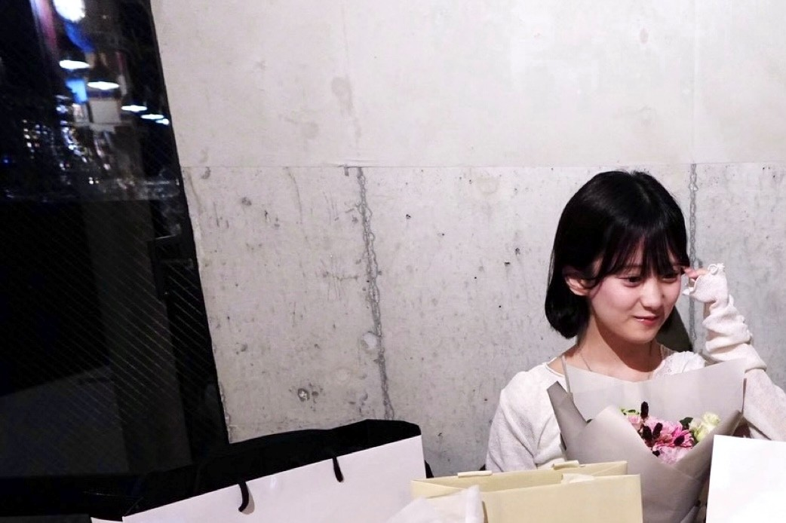

橘杏咲の立ち話もなんですから！ 第28回橘杏咲的“站着聊可说不完！” 第28回
皆さんこんにちは〜
大家好〜
11月です。2026年も残り2ヶ月ですね。
11月啦。2026年也只剩下最后2个月了呢。
2026年中にやらなきゃいけないことをそろそろリスト化しないとまずいです。
得赶紧把2026年内必须完成的事情列张清单了，不然可就糟了。
10月はのんびり楽しくお誕生日月を満喫しました💭
10月我悠闲又开心地尽情享受了自己的生日月💭
今月も観劇に行けたし、美味しいものをたくさん食べられたしで最高の月になりました。本当に色々な方にお祝いしていただいて嬉しかった〜！！
这个月也去看了剧，还吃到了好多好多美食，真是太棒的一个月。收到了许许多多人的祝福，实在太开心啦〜!!
それこそ、Xでもたくさんの「おめでとう」をいただきまして、、、本当にありがとうございました！！ ケーキやグッズでお祝いしていただいたり……幸せものですねぇ。応援広告も出していただいたとのことで！ 1人で見に行ったりもしていました。いや〜カメラフォルダが充実すること充実すること。
尤其是在 X 上收到了满满的“生日快乐”……真的非常感谢大家!! 看到大家摆出蛋糕和周边为我庆生……我真是个幸福的人呀。而且大家居然还为我投放了应援广告！我自己还一个人偷偷跑去打卡了呢。哎呀〜手机相册真是越来越充实、越拍越满了。
そして、事務所でプレゼントやお手紙も受け取らせていただきました……！！ ありがとうございます。お家で一つ一つゆっくり目を通させていただきました。みなさんもご存知の通り、私は褒められて伸び〜るタイプなので、みなさんの温かい文章からたくさんのエネルギーとモチベーションを摂取いたしました。のびのび。いままで皆さんからいただいたものも、こっそり大切に使わせていただいています。日々元気をもらっていると言っても過言ではないですね。
此外，我也在事务所收到了大家寄来的礼物和信件……!! 非常感谢。回到家后，我每一封每一件都慢慢认真看过了。正如大家所知，我是那种一被夸就会蹭蹭长进的类型，所以从大家温暖的字句里汲取了满满的能量和动力。舒展成长中〜。大家一直以来送给我的东西，我也都在私下里好好珍惜地使用着。说自己每天都在从中获得元气，真的毫不夸张。
応援していますといってくださる方のことを見るたびに、私のどこをいいと思って応援したいと思ってくださったのだろうか、と気になるわけです。応援してくださる方のためにも、自分のためにも堂々としていたいし、自分のいいところは自分がいちばん理解しなきゃと思うのですが、それってかなり難しいことなんですよね。
每次看到对我说“我支持你”的人，我总会忍不住好奇：大家究竟是觉得我哪里好，才想要支持我的呢？无论是为了支持我的人，还是为了我自己，我都想堂堂正正地站着，也觉得自己最应该了解自己的闪光点，但这其实是一件相当难的事呢。
なのでやっぱり皆さんから直接いただく「ここが素敵だと思います！」の言葉を聞くことができると、ここはいいと思ってくださる人が1人でもいる！ と自信と元気がもらえるのでありがたいです。そのおかげか、最近かなり自分の声が好きです。元々嫌いなわけではないのですが、特別好きでもなかったので、皆さんから声が好きだと言われると私もかも！(笑) となってきました、、(笑)
所以果然还是在直接听到大家说“我觉得你这里很棒！”的时候，会觉得“至少有人认可我这一点呢！”，从而收获自信与元气，真的很感激。或许正是托大家的福，最近我变得相当喜欢自己的声音了。本来我也不讨厌自己的声音，但之前算不上特别喜欢，结果老听大家夸“喜欢你的声音”，我也开始觉得“好像我也是诶！”（笑）……渐渐变成这样了（笑）。
日々自分の喋り方や声の癖で苦しむことがちょこちょこあってぐぬぬ……となることもあるのですが、自分の良いところは生かした上で幅を広げられるように頑張りたい気持ちです。まぁでもとにかくお芝居！ もっともっと頑張りたい！ がんばりたい！！ 客観的な意見を自分なりに落とし込んで、昨日よりも今日。ともっといいものが出力できるようになりたいですね。日々精進、です。
虽然平时还是会时不时被自己的说话方式和发音习惯折磨得暗自咬牙“唔呶呶……”，但我希望能发挥自身优点的同时，努力拓宽自己的表现维度。不过说到底还是演技最重要！我想更加更加努力！一定要加油!! 把客观的意见用自己的方式消化吸收，争取今天比昨天拿出更好的表现。唯有日日精进呀。
今年の秋は雨が続いていたり涼しくなるのも早かったりで、テンションがあがらないなと思う日が多かったのですが、お誕生日のおかげでかなりテンションあげあげになりました。ラストキャンパスライフも満喫しなきゃいけないし、もたもたくよくよしてる暇など全くない！
今年秋天一直阴雨绵绵，天也凉得特别早，本来有不少情绪提不起来的日子，多亏了生日，整个人一下子嗨起来了。而且最后的大学校园生活也必须尽情享受，根本没工夫磨磨蹭蹭、垂头丧气的！
家族と行きたかった特別ご飯はタイミングが合わずでまた今度。きっとこのコラムが上がる頃には行けているはず。当日の夜は特別ご飯には行かなかったけれど、しっかり近所の焼肉へ行きました。やっぱり肉、なんだよなぁー！(あとおめで高千穂も飲んだよ。カフェオレ不動のNo. 1はあなたです🥇)
本来想和家人去吃一顿特别的庆生大餐，可惜时间没凑上，只好改天再去。等这篇专栏上线的时候，应该已经吃上了吧。生日当天晚上虽然没去吃特别大餐，但我还是稳稳去了家附近的烤肉店。果然还是得吃肉才行啊——！（而且还喝了“庆生高千穗”哦。咖啡欧蕾界不可动摇的第一名非你莫属🥇）
お誕生日前後は、いつもの中高の仲良しさんたちにお祝いしてもらいました🎶 みんなでお誕生日ディナーだったのですが、夜ご飯の時間まで空いていた3人で上野動物園に行ったんです。
生日前后，熟悉的初高中好朋友们帮我庆生了🎶 本来是大家约好一起吃生日晚餐，晚饭前刚好有空的我们三个人就先跑去了上野动物园。
久方ぶりの動物園だったのですが、やっぱり館とか園が付く場所って楽しいですね！！ 遅めの時間だったのでナイトズー？ とやらを初体験しました。暗いと動物園の雰囲気もかなり変わって、暗がりの奥に動く動物を見つけられると興奮しました。
虽然是久违地逛动物园，但名字里带“馆”或者“园”的地方果然好好玩啊!! 因为去的时间比较晚，还第一次体验了所谓的“夜间动物园（Night Zoo）”？天色暗下来后，动物园的氛围也变得截然不同，能在幽暗深处发现正在走动的动物时，整个人都兴奋起来了。
でも暗くてどこがどこにあるのか全く分からなくてめちゃめちゃ迷いましたね。たくさん人がいるってことはこっちだろ！ とズンズン進んでも思ってたんと違う……になり、園内をぐるぐるしていました。遊園地久しぶりなほぼ初心者軍団にナイトズーはかなり難しいことが分かりました。予習大事！
不过天太黑了，完全搞不清哪儿是哪儿，结果疯狂迷路。心里想着“那边人多肯定是对的吧！”就大步往前冲，走到头却发现“跟想的不一样啊……”，就这样在园里兜了好几圈。由此可见，夜间动物园对我们这支许久没逛游乐园的准新手军团来说难度实在太高了。提前做功课真重要！
それと、パンダは居なかったけれど、パンダまんは食べました。あとパンダの像と写真が撮れるスポットでみんなで写真を撮ってもらって、その写真をキーホルダーにしたものを購入して、謎に友達みんなからサインを貰いました。可愛いキーホルダーがたくさんついているところに実写キーホルダーもつけてあげたのですが、ちょっと浮いてます。まあ誕生日の思い出ということで。
还有，虽然没见到大熊猫，但我吃了熊猫包子。另外大家还在能和熊猫雕像合照的打卡点请人拍了照，买下了做成钥匙扣的纪念照片，还莫名其妙让朋友们在上面挨个签了名。我把这个真人照片钥匙扣挂在了一堆可爱挂件中间，看着稍微有点格格不入。嘛，就当作生日的珍贵回忆吧。
私たちは今年から誕生日プレゼント希望制というのを取り入れていまして、誕生日付近になるとLINEグループにノートが貼られて何が欲しいかを書くというのがあるんです。皆とはかなり長い付き合いなので、杏咲の欲しい雰囲気はみんな分かるよなあっ！ の気持ちでアバウトに書いちゃったのですが、それにしてもどんどんぴしゃなプレゼントさんたちで。あとすごい量。流石に10年の年月を感じました。
我们这帮朋友从今年起实行了“生日礼物许愿制”，一到快过生日的时候，就会在 LINE 群里发一篇记事本，让寿星写下自己想要什么。因为跟大家认识太久了，我抱着“杏咲喜欢什么风格大家肯定都懂吧！”的心态写得挺笼统的，可即便如此，收到的礼物却全都是精准正中红心的神仙好物！而且分量惊人。真不愧是相识十年的默契啊。
そんなプレゼントたちとお花に囲まれて、みんなからカメラを向けられてちょい恥ず～な📸
被这些礼物和鲜花簇拥着，又被大家举着相机齐刷刷拍个不停，稍微有点不好意思啦〜📸

10月、実は毎日適当に日記をつけようかなと思ってたんです。でも、忘れてました。それを今気がついた。
10月的时候，其实我原本打算每天随手记点日记来着。结果完全忘光了，而且现在才猛然想起来。
前やっていたひきだし日記という手軽にできるアプリを開いたら「10月1日 13:39 おなかがいたかった」で終わってました。
打开之前用过的一款挺方便的叫《抽屉日记（ひきだし日記）》的 App 一看，记录就定格在“10月1日 13:39 肚子好痛”这一条上。
いや、1日で終わるのは流石に……流石に橘さぁん……。気が向いたら再開しようと思います。ちょっと嫌なこととかがあるとそれを文章で残すのに抵抗があって、空欄にするといつのまにか忘れちゃうみたいなことありますよね。
喂，才记了一天就烂尾也太……橘小姐你这也太离谱了吧……等哪天有兴致了我再重启吧。每次遇到稍微有点烦心的事，总会抗拒把它写成文字留下来，结果一留白，不知不觉间就全给忘了，大家也有这种经历吧。
それでいうと、最近毎日の過ごし方が自分にとってベストではないような気がしていて！ 毎日楽しく良い日を過ごせている自覚はあるのですが、もうちょっと良くできる気がしていて。
顺着这个话头说，最近我总觉得自己每天的过法还没达到对自身来说的最佳状态！虽然能感受到自己每天都过得开心又充实，但总觉得还能再过得更好一点。
もう少し早く寝て、朝早起きして、ちゃんと朝ごはん食べて、萎え〜なことが起きたらスマホから離れて読書したり隙間で課題進めたり。1日お休みができたら半端にだらだらするんじゃなくて、朝ちゃんと起きて片付けしたり、パーっとお出かけしちゃったり。もう少しいろいろと出来そう。
比如再早睡一点，早上早点起床，好好吃顿早饭，遇到让人泄气〜的事就放下手机看看书，或者利用碎片时间推进一下作业。要是有整天的休息日，也别不上不下地赖着虚度，而是早上利索起床收拾屋子，或者痛痛快快出门去玩。感觉自己明明还能做到更多事情呀。
無駄な時間なんて無いと思って生きているのですが、にしてもこのまま26年は終えたくないかも……！
虽然我一直秉持着“人生没有白费的时间”的信念生活，但即便如此，我也不想就这样结束2026年呀……！
お誕生日のおかげで色々な人とご飯に行く約束を立てられて幸せなので、11月はそれをモチベーションに日々有意義に過ごしたいです。
托生日的福，和好多人都约好了吃饭，觉得好幸福，所以11月我想把这些约定当作动力，把每一天都过得充实而有意义。
あと袴選んだりね。しないと、ね。
还有得去挑毕业典礼穿的袴（和服裙裤）呀。必须得挑了呢。
卒業式もあるので髪の毛を頑張って伸ばそうとしている次第です。
加上马上就要毕业典礼了，我正努力蓄长发中。
成人式もボブだったので、学生ラストは大人っぽくしたいなぁと思い。髪を伸ばすのって本当に大変ですよねぇ。頑張りたい。
因为成人式的时候也是波波头，所以学生时代的最后一次想走成熟知性一点的路线呀。留长发真的好辛苦啊，我要坚持住。
女の子が色々なヘアスタイルをしているのが大好きなので、私もしたいなとうずうずしてます。最近カメラロールを遡っていたら、2023年の8月あたりに顎下2.3センチのボブにしてからずっと短かったです。なんかめちゃ髪色茶色いし、矯正もしているしで今の私とあんまり似てなかった（？）。ボブは楽だし可愛いので一回切ると辞められなくなるのが本当にだめです。
我特别喜欢看女孩子尝试各种各样的发型，自己也心痒痒地好想试试。最近翻了翻手机相册，发现从2023年8月左右剪成下巴下方两三厘米的波波头之后，我就一直留着短发。那时候发色染得超棕，还戴着矫正牙套，感觉跟现在的我长得都不太像了（？）。波波头又好打理又可爱，一旦剪短就彻底上瘾戒不掉，实在太要命了。
でもまあ耐えられなくてエクステで伸び～、すぐ切り～になるかもしれませんが。
不过嘛，说不定哪天我就忍不住了，直接变成“接发变长〜、转头又剪短〜”的节奏也说不定。
最後に！ そういえば、私あずちゃんって呼ばれるのが最近好きでというお話をちょこちょこしてるじゃないですか。ちょこちょこではないかも、ちょこかも。
最后！说起来，我最近不是隔三岔五就提过自己很喜欢被人叫“あずちゃん（小杏）”嘛。好吧也许算不上隔三岔五，大概就偶尔提过一两次。
勿論あずちゃんって呼ばれるのも、たちばなもあずさもあずぅさもなーんでもうれしいのですが、実は「杏咲ちゃん」がかなりうれしい説が浮上していまして。
当然啦，无论是叫我“あずちゃん”，还是“たちばな（橘）”、“あずさ（杏咲）”、“あずぅさ”，怎么叫我都超开心的，但最近突然冒出一个新发现——其实被叫“杏咲ちゃん（杏咲酱）”会让我特别特别开心！
というのも、杏咲という漢字が大好きなんです。XのIDもあんずさくですし。素敵な名前をつけてくれた両親に感謝ですね。なので漢字で杏咲をみるとテンションあがります。まぁでも好きなように呼んでいただけたらと思うんですけどねーっ！
要说为什么呢，是因为我超级喜欢“杏咲”这两个汉字。连我 X 的 ID 也是“あんずさく”（把“杏”和“咲”拆开来训读）呢。真的很感谢给我起了这么好听名字的父母。所以一看到汉字写着的“杏咲”，我就会特别兴奋。嘛，不过大家按自己喜欢的方式叫我就好啦——！
では今回もここら辺にして……今月の目標はズバリ
那么这一回也差不多写到这里……本月的目标就是——
「絶対に卒論を進める」です。
《绝对要推进毕业论文》。
単位はもう大丈夫だから〜とあぐらをかくのはやめなさい私。卒論を書きなさい。進めなさい。
别再仗着“反正学分已经够了〜”就高枕无忧了啊，我自己！快写毕业论文！快推进度！
かなり涼しくなってきてお洋服も難しい時期になってきましたね。冬に向けて準備をしなくちゃ！ 体調には気をつけて、今月も楽しく頑張りましょう〜。私も頑張る。
天气变得相当凉爽了，又到了每天纠结穿什么的季节呢。得开始为冬天做准备啦！大家一定要注意身体健康，这个月也一起开开心心地加油吧〜。我也会努力的。
では✌🏻
那么下次见✌🏻
橘さんに質問！向橘小姐提问！
Q：『黒猫と魔女の教室』のアニメ、半年間お疲れ様でした！ 個人的に原作の連載からずっと追っていた作品だったので、アニメ化の夢が叶い、橘さんが演じるユゥちゃんの可愛くカッコ良い姿も見る事ができて、すごくうれしかったです！ 橘さんは、昔からずっと追っていたもしくは追っている作品などはありますか？（千葉県・師走）
问：《黑猫与魔女的教室》动画为期半年的播出辛苦啦！我个人从原作连载开始就一直在追这部作品，所以动画化的梦想成真，还能看到橘小姐饰演的小优既可爱又帅气的模样，真的特别开心！请问橘小姐有没有从以前就一直追、或者现在仍在追的作品呢？（千叶县·師走）
師走さん、ご質問ありがとうございます！
師走，感谢你的提问！
そうなんです！ 猫魔女2クールが終わってしまった（ ; ; ）寂しい！！アフレコ期間含めずーーっと楽しい時間だったので、終わってしまうとやっぱり寂しいものです。
没错！《黑猫魔女》两季度的播出已经落幕了（ ; ; ）好舍不得!! 包括配音期间在内，这整段时光一直都开心得不得了，真正完结了果然还是会觉得好寂寞呀。
なんと……！！ そう言っていただけてとっても嬉しいです！ ありがとうございます……！！🤍
天哪……!! 听到您这么说我真的太开心了！非常感谢……!!🤍
ユゥは本当にずるい子ですよね。私本当にあのようなタイプの子に弱いんです。自分とは似ても似つかないような子なのですが、かなり肩の力を抜いて自分らしく気持ちよくお芝居できたのでとても不思議なんですよね……。2クールという期間、ユゥを演じられたことは自分にとって楽しかったのは勿論、一緒に成長出来たような気がして幸せでした。
优真是个太犯规的孩子呢。我对那样的类型实在毫无抵抗力。明明是个跟我自己完全不像的孩子，演绎起来却能卸下肩膀上的紧绷感，以很自然舒服的方式去演，真是太奇妙了……在两个季度的时光里能饰演优，对我而言不仅非常快乐，还觉得自己仿佛和她一起成长了，真的好幸福。
ずっと追っていた作品……！難しいっ！ 私自身漫画を読むようになったのが中学生以降でちょっと遅めなんです。受験期に入ってからは漫画を読まなくなってしまったので、しっかり読んでいたのは4年くらいなのかも。
一直追着的作品……！好难回答呀！我本人是上初中以后才开始看漫画的，入坑稍微晚了点。后来进入升学备考期就没怎么看了，所以真正认认真真看漫画的时期大概也就四年左右吧。
その期間に読んでいた作品がアニメ化するというのをみると、やっぱりすごくうれしいですね！ 今パッと出るのだと「氷の城壁」や「ハッピーシュガーライフ」とか。鍵空先生の絵が本当に好きで、最近もXでイラストが更新されると幸せな気持ちになります。
看到那段时间追过的作品宣布动画化时，果然还是会特别激动开心呢！现在脑海里立刻浮现出来的有《冰之城墙》和《Happy Sugar Life》之类的。我真的超级喜欢键空老师的画风，最近在 X 上看到老师更新插画时也会觉得好幸福。
最近だと「きみが死ぬまで恋をしたい」かもです！ おうちに漫画があります…！！ 養成所時代にミミに声を当てて練習したりしていたので感慨深いです……。まだアニメを最後まで見れていないのでみるぞっ！
近期的话，大概是《与你相恋到生命尽头》吧！我家里还收着漫画单行本呢……!! 以前在声优养成所时期我还试着给美美配音做练习，如今真是感慨万千……动画我还没看到大结局，一定要补完！
以前もコラムで少し触れましたが、小学生の頃に読んでいた「らくだい魔女シリーズ」や「ドラえもん」は今でも展開があるとワクワクします。他にもいろいろありそうなので思い出したらコラムでお話しさせてください🎶
以前在专栏里也稍微提过，小学时读过的《落第魔女》系列还有《哆啦A梦》，直到现在只要有新动向我依然会兴奋不已。应该还有不少其他作品，等我想起来再在专栏里和大家分享吧🎶
最近あまり漫画を読んでいないなぁと思ったのでチェックしてみようと思いました！ 小説もいいけどやっぱり漫画っていいよなぁ〜！！
这么一想发觉自己最近好像没怎么看漫画，决定找些来看看了！小说固然很好，可漫画果然也很棒呀〜!!